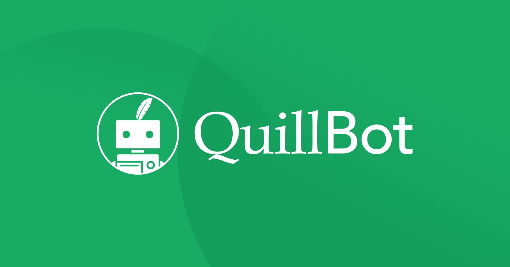

AI as a Research Assistant
Before, books are the main source of information whether you need it for gathering data, looking for definitions, or even entertainment. Now, AI is an all-around program that can give it all to you especially for research. AI is a good assistant for researching and gathering data as long as you can have specific prompts that will include the credibility of the result. Most of the time, AI only conclude information based on different data from the web without inserting the sources.
Examples
- A student uses AI to summarize a long article into key ideas for easier understanding.
- AI provides a simple explanation of a complex topic before the student explores deeper sources.
- A student asks AI for possible topics or directions for a research project.
Aside from being the assistant for instant information, AI can also suggest new ideas that you can use for adding personal opinions.
AI in Writing
AI is also useful for producing content for academic assignments like papers, essays, and presentations. It can help with idea generation, thought organization, and sentence structure and grammatical improvement. However, the students should only use it for gaining new ideas and still be creative in their own way. There is such thing like creative writing that shows how humans put emotions with their work that AI cannot.
Aside from creating the written ouput itself, AI can be more useful for checking correct tenses, grammar, and even punctuations that can give a heads to the students and improve their project. This doesn't remove the originality of the work but rather helps the student to have good ouput overall. One example of that is Quillbot, where it can mainly check grammar and paraphrase passages. It recommends new structure of sentences that also fit with the topic from the passage.

AI for Data Analysis and Problem Solving
In more technical subjects, AI can help analyze data and solve problems more efficiently. It can identify patterns, provide solutions, and explain step-by-step processes, which is especially useful in math, science, and programming-related projects.
Another benefit is instant feedback. When students solve a math problem incorrectly, AI can immediately point out where the mistake happened. This allows students to correct their errors right away instead of repeating the same mistake. It also helps reinforce learning because students can try again while the concept is still fresh in their mind.
AI can also adapt to a student’s level of understanding. If a student is struggling with basic concepts, the AI can provide simpler explanations or easier practice problems. On the other hand, if the student is more advanced, it can give more challenging problems to improve their skills further. This kind of personalized support is useful because not all students learn at the same pace.
Ethical Use of AI in School Projects
Having these different AI tools make the lives of the students easier. But, there should be a limit to that. Using AI in School Projects is not a harmful thing because who doesn't want to make things easy and convenient, right? Students should know how to be a responsible user that themselves should know if this specific topic needs help from AI. If you can solve it on your own, do it by yourself. Even though AI can improve projects, it can also decrease our logical, analytical, and creative thinking.
Things to Consider in Using AI for School Projects
- A student uses AI for guidance but writes their own final output.
- Copying AI-generated answers without understanding is considered misuse.
- Schools may require students to explain their work to ensure originality.